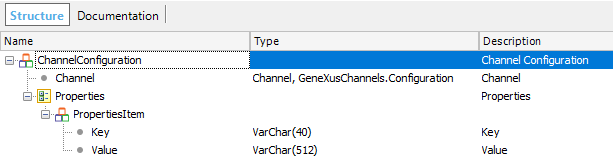
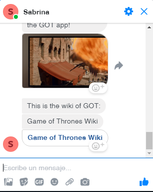

This document explains the steps to be followed in order to integrate your chatbot with Facebook Messenger.
How does it work?Basically, there are three points: the service that will consume the API and send the message, the Facebook Page, and finally the Facebook User. Facebook configurationTo use Facebook Messenger as a channel, the user needs to do some configuration, as explained in Facebook Messenger configuration. Webhook implementationSee at the Chatbots sample using Facebook Messenger the procedure "FacebookWebhook". This is an example, where you may note the following:

&ChannelConfiguration.Channel = Channel.FacebookMessenger
&AccessToken = !"34567899999999999999999999999" //Set a valid value here.
for &ChannelConfigurationProperty in &ChannelConfiguration.Properties
if &ChannelConfigurationProperty.Key = FacebookProperties.AccessToken
&ChannelConfigurationProperty.Value = &AccessToken
return
endif
endfor
&ChannelConfigurationProperty = new()
&ChannelConfigurationProperty.Key = FacebookProperties.AccessToken
&ChannelConfigurationProperty.Value = &AccessToken
&ChannelConfiguration.Properties.Add(&ChannelConfigurationProperty)
Then, in the FacebookWebhook procedure, the Recipient ID is obtained from the HTTP request, and added to the Channel configuration, calling the SetUserIdInConfiguration procedure.
CommonChatbots.SendMessageFromChannel(&FromFacebookMessage.entry.Item(1).messaging.Item(1).message.text, &RecipientId, !"TestChannels", &AnalyzeResponse) (*)
for &Response in &AnalyzeResponse.GXOutputCollection
&Message.Text = &Response
if &AnalyzeResponse.Context.GXSetImageResponse
&MediaMessage.URL = &AnalyzeResponse.Context.GXResponseImage.ImageURI
&MediaMessage.Type = MediaTypes.Image
&Message.Payload.Type = PayloadTypes.Media
&Message.Payload.Body = &MediaMessage.ToJson()
endif
//Send the response using the SendMessage service.
GeneXusChannels.Message.SendMessage(&ChannelConfiguration, &Message, &Messages)
endfor
(*) Note that you have to set the name of your Conversational Flows object as the third parameter for the SendMessageFromChannel call. In this example, the instance name is "TestChannels." Sending messages to the userIf the user has talked once to your page (and you have his Recipient ID), you can send messages to him or her (without using the chatbot instance), using the GeneXusChannels.Message.SendMessage(&ChannelConfiguration, &Message, &Messages) service. Take a look at the SendMessagesFb object in the example, where several messages are sent to the user to show the different types of messages that can be sent. The SendMessagesFb procedure calls the GetConfiguration data provider. Note that to make this example work, you must first complete the GetConfiguration data provider with valid values for the Page Access Token and the Recipient.
ChannelConfiguration
{
Channel = Channel.FacebookMessenger
Properties
{
PropertiesItem
{
Key = FacebookProperties.AccessToken
Value = !"34567899999999999999999999999" //Set a valid value here.
}
PropertiesItem
{
Key = FacebookProperties.Recipient
Value = !"11111111111111" //Set a valid value here.
}
}
}
You can run the SendMessagesFb procedure and see how it works: 
|
| Backlinks | ||
| Toc:Chatbots in GeneXus | KB:Chatbots sample using Facebook Messenger | Facebook Messenger configuration |
| Message types supported for Facebook Messenger Channels API |